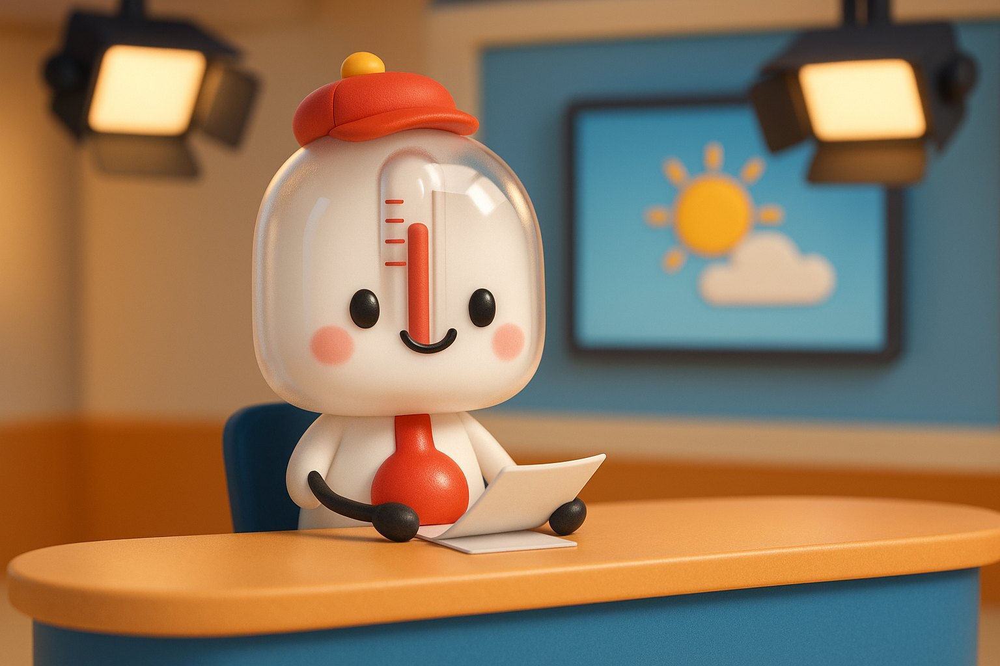
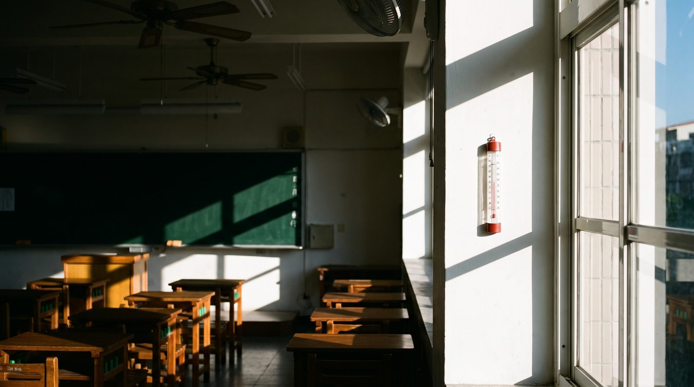
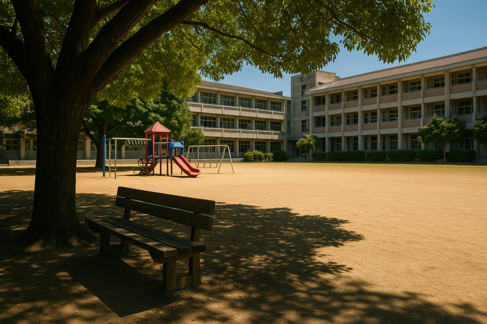
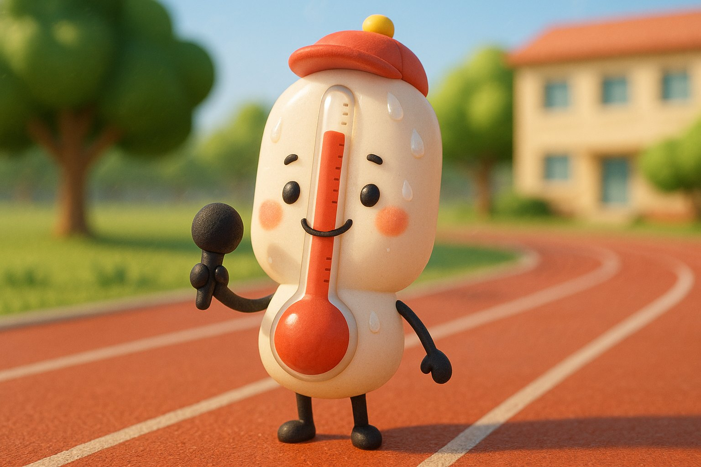

⬅ 返回
🗂️ 主選單

LIVE溫度新聞台示意・教學練習

溫度特勤隊・新聞時間今天好熱！
今天好熱！
校園哪裡最熱？
溫溫隊長 帶你到校園量溫度
主播 溫溫隊長
今天天氣很熱，記者到校園三個地方量溫度記者平安，大家都有喝水 💧
先猜一猜 🤔 哪裡最熱？點一張照片，或請同學舉手猜
👑

🏫 教室裡
27 度
👑

🌳 大樹下
30 度
👑
☀️ 太陽下
36 度
比一比：數字越大，越熱
☀️ 太陽下最熱！
36
太陽下
天氣好熱，特勤隊這樣做
待在樹蔭下
💧
多喝水🧢
戴帽子🔵 基礎哪裡最熱？點一張
🟠 挑戰太陽下最熱，因為……

點畫面 → 下一步
快訊
☀️ 今天好熱，記得多喝水 ｜ 🌳 樹蔭下比較涼 ｜ 🌡️ 讀溫度計：先找大數字，再往上數小格 ｜ 📺 本新聞為教學示意畫面，人物平安